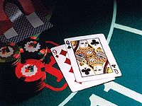
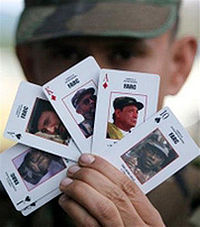
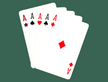
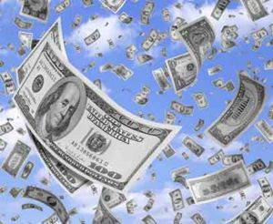

Póker
 De: La Frikipedia, la enciclopedia extremadamente seria.
De: La Frikipedia, la enciclopedia extremadamente seria.
El poker es un juego donde solo Chuck Norris gana siempre, creado por el mismisimo Chuck Norris, debido a que se habia aburrido de darle patadas voladoras a la gente en toda la cara, asi que invento un juego (perfecto claro esta) donde solo el pudiera ganar en el cual pudiera quitarle el dinero, y la poca dignidad que le quedaba a la gente. Este juego se llamo Poker, debido a que la gente al perder decia, Por que?!!, asi que le quito la r al por y puso la r al final, dando como resultado, la palabra póquer.
El juego
 Poker en todo su esplendor
 Sujeto jugando poker, al que no quiere que vean lo que tiene
El juego consiste, en que a usted le dan dos pedazos de cartulina, llamados "cartas", ahora, usted se preguntara, que hago yo con dos cartas?, pues sencillo, algun ocioso genio, les escribio por encima a las cartas, dibujitos letras y jeròglificos numeros que tienen un valor, por ejemplo, si tu tienes un 3, y el otro tiene un 8, el maldito hizo trampa el gano. En el juego hay 4 tipos de cartas, cada una con un dibujito bien bonito, para que el usuario conozca las cartas y pueda hacer trampa y quitarle el dinero a la gente conocerlas
- Los Diamantes: estas cartas tienen un
rombito rombo muy bonito de color rojo, aunque son iguales que las otras cartas, pero, ningún juego estaria completo sin su habitual Noob, algunos creen, que por tener un 4 de diamantes, le ganan a un 9 de corazones. Los diamantes no son intercambiables por dinero si te tocan.
- Los Corazones: las cartas
mas maricas mas bonitas del juego, tienen el dibujito de un corazoncito, entre mas corazones tenga la carta, mas marica puntos tiene el usuario que la posee
- Treboles: esta carta a diferencia de las demas, es negra por que
el creador es un maldito racista son 26 cartas rojas y 26 negras, mucha gente dice, que si te toca un trebol, vas a ganar debido a que los treboles dan buena suerte, pero al ser negros, los malditos te dan mala suerte al que le toca un trebol, pierde su casa y todo su dinero la partida.
- Espadas: estas cartas, aunque la gente les llame espadas, se llaman picas, por que la gente
se rasca el culo con ellas habla mal, su dibujito es un dibujito con forma de corazon volteado, con un palito abajo, como si al corazon le estuvieran dando por atravesando.
Combinaciones
 Combinacion mas alta en el poker
Claro que para que el juego, sea un juego, tiene que tener sus reglas, en este caso, para ganar se tienen que tener combinaciones de cartulinas cartas para formar una combinacion, entre mas alta sea tu combinacion, mas posibilidades tendras de ser millonario ganar. A continuacion se presentan las combinaciones presentes en este puto juego el juego
- Carta alta: Esta combinacion (que carajo ni siquiera es una combinacion, no se por que esta aca) se obtiene cuando el usuario no liga sus cartas con las de la mesa. Se suele decir
"no llevo una puta mierda" "huy, no tengo un coño". Ni un misero par ni nada... en resumen, tienes un trozo de mierda en la mano.
- Par: esta combinacion se obtiene cuando el usuario
hace trampa dos veces tiene dos cartas que tienen el mismo numerito, esta es la combinacion mas baja de todas, sin embargo, hay gente que apuesta su alma dinero a que van a ganar y pierden, por retardados.
- Doble par: Se obtiene cuando una persona
es mejor que tu tiene dos pares, obviamente, el doble par es mayor que el par, por que yo lo digo por las reglas de mierda oficiales, y por similitudes con el whopper y el doble whopper, ande a parar.
- Trio: (No las cartas no follan) Tambien llamado popularmente como trucha o pierna, debido a que para realizarla
necesita un pescado o una pierna suya necesita en vez de dos cartas como en el maldito par de mierda, necesita tres cartulinas del mismo numerito, nojoda...
- Escalera: Todas las cartas en orden (de menor a mayor y seguido, no vale 2,4,6,8,10). Ademas, y con el fin de putear solamente, tiene que ser cinco las cartas que se usen. Iba un amigo (A mi no me pasan estas cosas, claro) el otro dia con un 2, un 3 y un 4 y no se si llevaba una K o algo asi y le dijeron que no valia, que eran pocos peldaños. Si se inventan las cosas a mitad de la mano, normal que pierda.
- Color: Lo que no le gusta a las personas de color, es todas las cartulinas del mismo palo (Osea que sean del mismo jeroglifico, te creias que te lo iban a poner facil?). Tiene que ser del lado del dibujo, no vale mirar el dorso de las cartulinas, sino, se empataria siempre.
- Full: Esta jugada se llama por la cara que pones cuando le sale a otro
hijo de puta jugador. Consiste en un trio y en una pareja (Diversion toda la noche). Otras escuelas de pensamiento dicen que es porque cuando otro tiene color siempre hay un listo que le saca esta mano, y se oye un "Este puto juego Esta ingrata actividad pseudodeportiva es una Full!"
- Póquer: 4 numeritos iguales. Jodido de hacer, casi nunca sale (A menos que te prepares las cartas o seas amigo de el/la que reparta).
- Escalera de color: Es cuando la escalera se fusiona con el color (en plan fusión) y forman la jugada de las jugadas. Imposible de vencer, nunca sale, ni haciendo trampas. En contra de lo que a primera vista parece, no hace falta que sean cartulinas negras.
- El Chuck: Si soy pendejo, esta es la jugada de las jugadas, la que nunca se vence y la que
a ti nunca te saldra, Chuck la invento cuando tenia que terminar el juego rapido, y queria quedarse con todo el dinero. Para lograr esta combinacion es simple, no importa la carta que tengas, tienes que ser Chuck Norris y ganas automaticamente.
Vocabulario
Fauna
Actualmente hay 2 grandes tipos de usuarios, por un lado estan los que juegan online, como si fuera al world of warcraft o algo asi, y los que juegan en vivo, que tienen poderes psiquicos.
Ambos grupos piensan que son mejores que los otros y que estos apestan y son unos frikis (pero de mal rollo).
Jugadores en vivo
Estos son como los del video de Melendi o James Bond en Casino Royale. Son chicos malos, gente de mal vivir, drogadizos y borrachos. Al final de la partida tienen la costumbre de llevarse una paliza, la pasta (haciendo trampas) y a la chica rubia de tetas enormes (que era el compinche). Entre otras cualidades estan:
- ver en casos de niebla densa. Acostumbrados a jugar en ambientes de humo cerrado, en sotanos sin ventilacion donde a parte de fumar queman cosas para hacer clima, sus ojos han desarrollado una mucosa que les afina la vista y les protege del aire tan cargado del exterior. En casos extremos de estos seres han aparecidos fosilizados ya en huecos en sotanos que no tenian forma de acceder o salir y sujetando las dichosas cartulinas, aun hoy es un misterio como entraron hasta ahi y se piensa que fue por generacion expontanea. Aunque pueda parecer geniales compañeros para los viajes en coche por parajes con niebla, en realidad no lo son. Es mejor matarse antes que llevar a uno de estos, porque aunque pueden ver en la niebla te darian la paliza todo el viaje contandote sus estup
idasendas anecdotas sobre una mano con la que casi ganan el EPT o algo asi, cuando en realidad estaban en la segunda mano del torneo.
- mirar a los ojos y leerte el alma. Esto no tengo muy claro lo que es, pero ellos lo cuentan asi, asi que asi lo describo tal cual, casi foneticamente. Estos seres no necesitan saber que posibles cartas lleva su contrincante, LE MIRAN A LOS OJOS! no es que se reflejen sus cartulinas sino que se adentran en lo mas profundo de su ser, esquivando las visceras que se encuentran por el camino (y no estamos hablando de hacerlo en la manera gay que alguno pensara... esto es pureza) y ahi infunden el miedo para obligarles a que tiren sus cartulinas aun llevando la mejor combinacion o paguen llevando un dislate. Desde dentro de su ser (es decir, una vez mirado a los ojos) el jugador rival ya no tienen control sobre sus
esfinteres actos, con lo que pierden siempre. Muchos desarrollan esta habilidad al maximo, consiguiendo mirar a los ojos a las viejas y ganar muchisimo dinero que luego pierden en online o alternar. Para defenderse de los otros depredadores han desarrollado la facultad de llevar gafas de sol en sitios oscuros aun sabiendo que parecen retardados
- bloqueo de toda actividad cerebral para evitar tics. En argot del poker, TELLs, son movimientos involuntarios que ayudan a los miradores de ojos (eye-lookers) a fijar los palos exactos de la mano del rival. Un jugador profesional de poker en vivo es capaz de sudar a voluntad, como tecnica de despiste de sus rivales.
Jugadores online
Consecuencias
Si ganas
 Esto es lo que te pasa si ganas
- Te forrarás
- Nadie querrá ser tu amigo
- Conocerás a mujeres
- Te creerás que eres Dios hasta que te des cuenta de eres Bill Gates
- Morirás de una patada voladora de Chuck Norris, ya que nadie gana a Chuck Norris (y por que te pateara el culo y te sacara del casino)
- Podrás jugar a la guerra.
Si pierdes

Esto es lo que te pasa si pierdes
- Perderás pasta
- Nadie querrá ser tu amigo (por perdedor)
- Te suicidarás
- No conocerás mujeres (si no tienes pasta, no les interesas) por lo que se cumplirá la tercera consecuencia
Autor(es):
- Jorton
- Prototype
- Veni Vidi Vici
- Kevrochi
- Harry El del Pote
- Gñapero Solitario
- Daniejk
- Samumetal
- Gismo the
- Brokenman
Frikipedia 2005-2016, Licencia
GFDL 1.2 - Extraído por FrikiLeaks